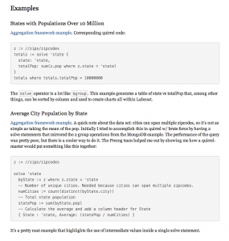

We recently came across a blog post from one of our users: Example analytics with Precog Labcoat & MongoDB that provides some examples of how to translate some MongoDB queries into Quirrel using Precog for MongoDB. MongoDB hosts a version of the sample data and here are the MongoDB versions of the queries: states with populations over 10 million and average population by state. For the details, make sure to check out the blog post.
It's great to see community members using Precog for MongoDB and sharing their knowledge with the rest of the community. You can also get started with Precog for MongoDB by getting the free download.